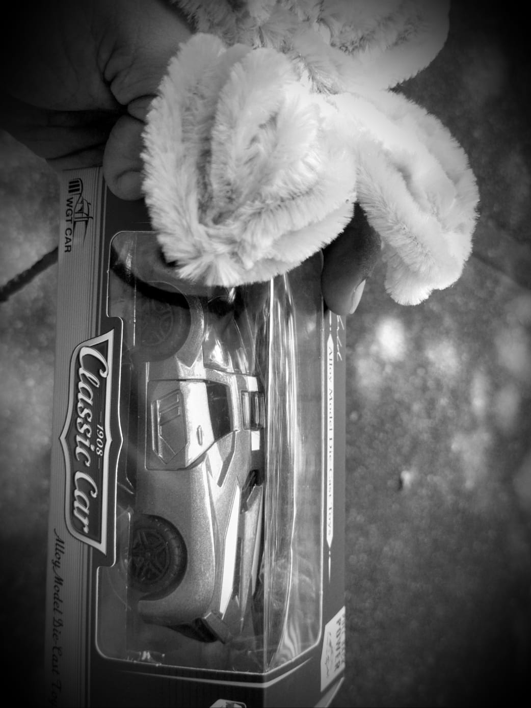
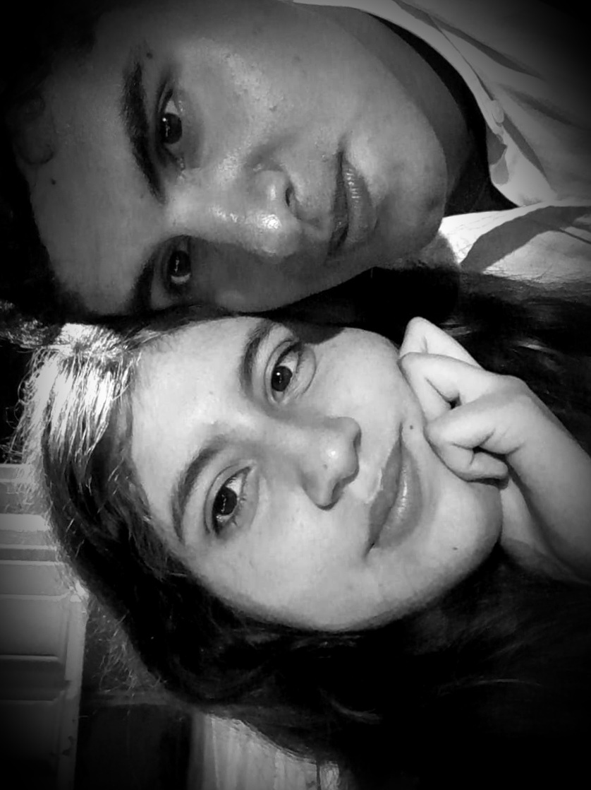
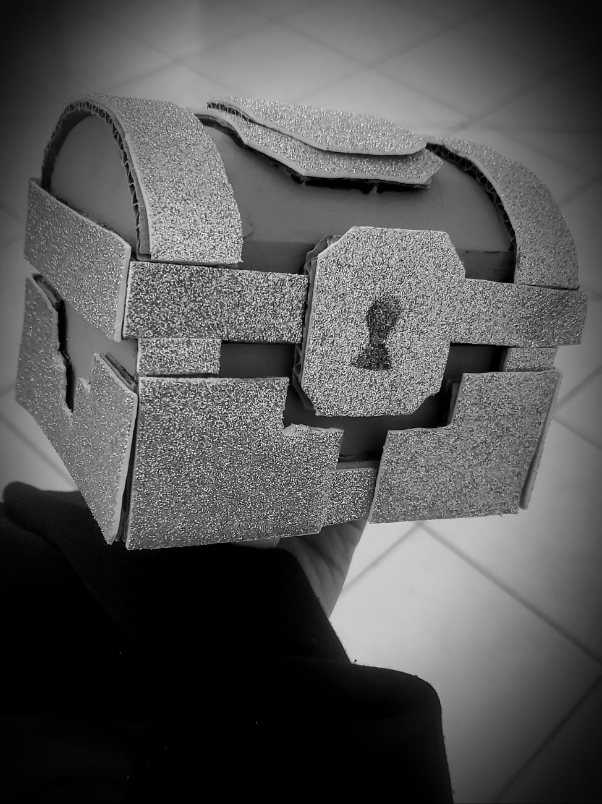
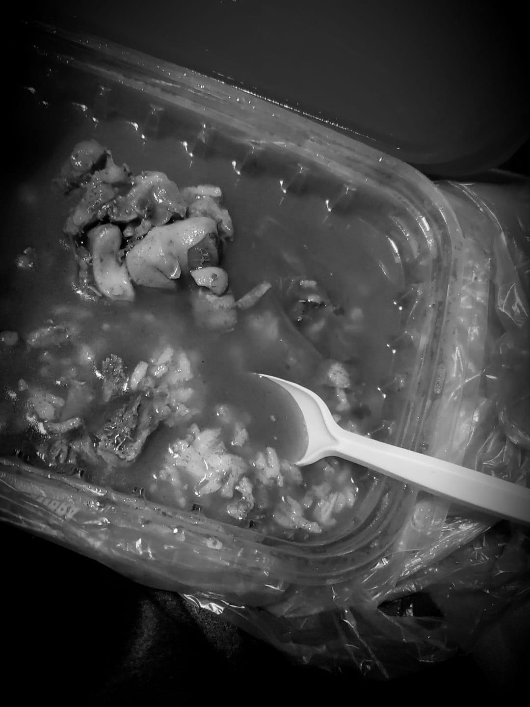
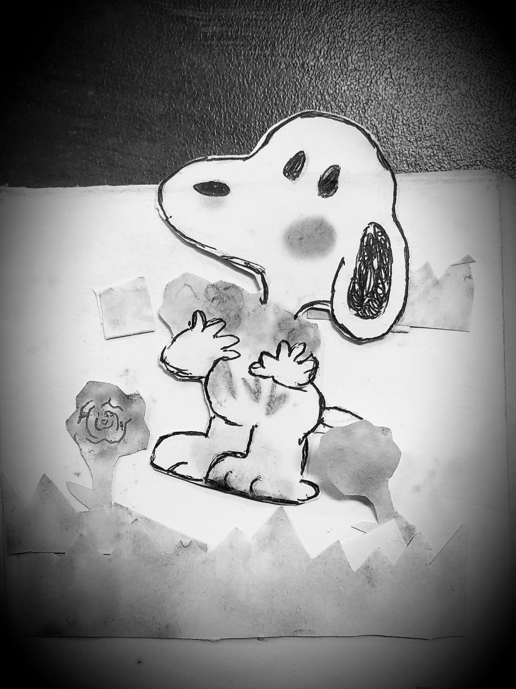

Yo fui el viajero ciego que soltó tu mano, buscando un falso fuego en mapas
extranjeros; creí que el paraíso era un lugar lejano, y perdí la ruta
por mirar a otros cielos.
Caminé persiguiendo un oasis inventado, una espiga dorada que solo fue
reflejo; idealizando sombras, sin haberlas tocado, mientras tú te rompías a solas frente al espejo.
Te dejé allí dormida, mi pequeña albondiguita, huyendo de
un silencio que no supe llenar; Busqué en la falsa magia lo que el ego
necesita, sin ver que era tu calma mi forma de respirar.
Pero el karma, maestro de lecciones tan crudas, me obligó
a ver de lejos tu nueva libertad; te vi brillar entre tantos, ajena a mis dudas, con la fuerza
imponente de tu propia verdad.
Mis celos fueron lava, mi mente una herida, imaginando manos rozando lo que
amé; escotes que lucías, segura y decidida, mientras yo en mi vacío, borracho te lloré.
En mis noches de frío buscaba a mi sirena, ese dulce tarareo que al sueño me llevaba; quería ser tu borreguito, purgar mi condena, volver a ese refugio que en tu piel me
guardaba.
Pero el hambre nos ganó, rompimos la distancia, la carne fue la goma para el
desconsuelo; tu cuerpo había cambiado, noté la discrepancia, tus curvas dibujaban un nuevo desvelo.
Volvimos a la cama sin títulos ni jueces, viviendo en esa casa nuestra propia
anarquía; haciéndolo con labia, dos o tres mil veces, llenando con gemidos la estancia vacía.
Ahí encontré mi paz, en el fruto sagrado, ese dulce
remedio para mi ansiedad; el sabor que curó mis días cansados, sentirme en casa, a salvo, en plena
oscuridad.
Jugamos al caos, huevos revueltos, gritos de placer fueron
mi absolución; con mis dedos sedientos, rápidos y sueltos, te di lo que callabas en cada rincón.
En menos de un mes descubrimos, piel contra piel, lo que un año de novios no supo
enseñar; que el sexo no es tan solo un acto de placer, sino un lenguaje nuevo para reaprender a amar.
Y ahí cambió el sistema, se reescribió el código, ya no eras la niña que huía a
dormir; te vi mujer inmensa, rompiendo el protocolo, enseñándome a quedarme, a luchar y a sentir.
Volvimos rotos, con las manos abiertas, tú con tu pelo nuevo, yo con mi vieja
culpa; cruzamos el umbral de las puertas inciertas, pidiendo al universo una segunda disculpa.
No fue borrón ni cuenta nueva, fue aceptar la historia, mirarnos las heridas; tú callaste mi error para salvar mi emblema, y ante tus padres
fuiste mi escudo, mi vida.
Esa noche en Wings, con una rosa
improvisada, envuelta en aluminio, imperfecta y real; te pedí que volvieras, mi niña, mi
amada, a escribir con mi pluma un nuevo final.
Hoy sé que no eres musa, eres algo más grande, eres los cuatro elementos de mi propia estación; eres
Fuego que calienta cuando el frío se expande, la pasión que con unos mangos me da relajación.
Eres Agua que limpia con llanto cristalino, recordándome
lo frágiles que somos al amar; eres Viento
que empuja mi barco en el camino, cuando el estrés del mundo me quiere
sofocar.
Pero sobre todo eres Tierra, mi suelo firme, donde
plantamos frutos de esfuerzo y de valor; donde saco dieces sin llegar a
destruirme, porque tu paz me ayuda a ser un triunfador.
Sí, el "clic" fue un destello, una manzana dulce, un veneno que un día me atreví a
probar; pero tú eres la vida que hace que me impulse, la compañera
eterna con quien quiero luchar.
Quizás no somos perfectos, ni cuentos de hadas, quizás a veces falte la chispa o la
fluidez; pero hay coraje en nuestras manos entrelazadas, y ganas de quedarnos hasta la vejez.
Entendí a la mala, perdiendo el camino, que amar no es colonizar, es ceder y
crecer; que tú eres mi certeza, mi hogar, mi destino, y que la entrega, mi vida... siempre vence al
placer.
No quiero más musas viviendo en mi mente, te quiero a ti, Dana, con tu luz y tu
gris; aquí estoy en mi barco, contigo al frente, siendo, por fin, imperfectamente feliz.





⚠️ ARCHIVO ENCRIPTADO Mantén presionado para reparar el vínculo
Con esta mano sostendré tus anhelos,
tu copa nunca estará vacía;
quiero ser tu vino,
tu luz en los cielos,